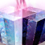
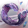
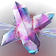
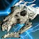
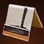
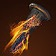
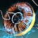
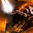

效果
| 名称 | 图标 | 说明 |
|---|---|---|
| 超凡 | 独特技能，靠均衡使用光能与暗影两种伤害类型充能。 造成伤害与施加元素效果都能提供超凡能量；增益与减益都算，各自计入对应阵营。 动能伤害同时填充光能与暗影两条槽，效率降低 50%；一条槽已满时，动能伤害填充另一条槽的效率降低 40%。 溢出伤害不计入超凡获取。 超凡激活时： 立即充满 2 次手雷与近战技能充能。 手雷技能被替换为职业专属的棱镜手雷，同时带光能与暗影两种伤害类型。 武器伤害提高 5%，手雷与近战充能速度额外提高 10%，伤害抗性提高 20% [5%]，持续 20 秒。伤害提升可与一切效果叠加。 超凡期间： 造成手雷技能伤害时，近战充能速度提高到每秒固定 35% 近战技能能量，持续 2 秒。 造成近战技能伤害时，棱镜手雷充能速度提高到每秒固定 35%，持续 2 秒。 超凡期间的击杀延长其持续时间，随击杀次数递减： T1 与 T2 级战斗人员 5% ｜ T3 与 T4 10% ｜ T3 精英、小头目与首领 15% ｜ 守护者 ?%。 从第 2 次击杀起，每次的延长量累计乘以 0.9? 的惩罚。 | |
| 元素效果 | 元素效果指各分支职业能施加的全部动词，对目标可以是正面（增益）也可以是负面（减益）。 装备任意电弧技能或星相即可通过多次电弧击杀获得增幅（推进器不计为电弧技能）。 装备任意缚丝技能或星相即可生成缠结，术士还能拥有停栖的线虫。 光能动词： 电弧 ｜ 增益 增幅、电光充能；减益 致盲、震颤；拾取物 离子轨迹。 烈日 ｜ 增益 治愈、焕光、恢复；减益 灼烧、点燃；拾取物 焰灵。 虚空 ｜ 增益 吞食、隐身、虚空覆盖护盾；减益 压制、不稳定、虚弱；拾取物 虚空裂口。 暗影动词： 冰影 ｜ 增益 冰霜护甲；减益 减速、冻结、碎裂；拾取物 冰影碎片。 缚丝 ｜ 增益 织造铠甲；减益 割裂、悬停、瓦解；拾取物 缠结。 | |
| 移动与职业技能 | 通常受分支职业限制的移动技能与职业技能，在棱镜上可以自由选择。 猎人可以使用瞬移与特技闪身。 泰坦拥有推进器。 术士可以装备瞬移与凤凰俯冲。 | |
| 熔炉竞技场调整 | 手雷、近战与职业技能 ｜ 充能速度降为 0.85 倍，回复倍率获取降为 0.8 倍。 该惩罚与熔炉竞技场基准的 0.8 倍充能速度叠加，实际为基准之上的 0.68 倍。 超能技能 ｜ 充能速度降为 0.95 倍。 与基准的 0.75 倍叠加，实际 0.71 倍。 |
碎片
| 碎片 | 图标 | 说明 | 属性变化 |
|---|---|---|---|
| 觉醒 | 6 秒内用元素伤害击杀 3 名战斗人员，或一次超能击杀： 生成对应元素的元素拾取物，类型由最后一击的伤害类型决定。 生成同一种非缠结拾取物之间有 5 秒冷却；冷却期间用该元素击杀，不计入生成另一种拾取物。 | +10 生命值 | |
| 平衡 |  | 3? 秒内用光能伤害击杀 3 名战斗人员提供 10% 近战能量。 3? 秒内用暗影伤害击杀 3 名战斗人员提供 10% 手雷能量。 | — |
| 祝福 | 近战击杀开始生命值恢复。 超凡期间，效果同时作用于 ? 米内的盟友。 | — | |
| 勇敢 | 手雷击杀为虚空武器提供不稳定子弹，持续 11.25 [7.5] 秒。 充能近战击杀为缚丝武器提供瓦解子弹，持续 11.25 [7.5] 秒。 | — | |
| 指挥 | 冻结或压制一名战斗人员： 补满已准备的武器，并提供 +20? 稳定性、+? 瞄准辅助与 +40 空中效率，持续 11 秒（4 秒内置冷却）。 击杀被冻结或被压制的战斗人员，分别生成冰影碎片或虚空裂口。 | — | |
| 勇气 | 对被冰影或缚丝元素减益影响的战斗人员：光能技能伤害提高 10%，光能充能近战技能伤害提高 50% [10%]。 | +10 手雷 | |
| 黎明 | 充能近战命中提供焕光，持续 5 秒。 充能近战击杀为自己与 ? 米内的盟友提供焕光，持续 5 秒。 | -10 近战 | |
| 违抗 | 终结技触发一次元素引爆，对 7 米内的战斗人员造成 135 点与超能匹配的元素伤害，并施加对应减益： 电弧 → 震颤 ｜ 烈日 → 40 层灼烧 ｜ 虚空 → 不稳定 ｜ 冰影 → ? 层减速，持续 ? 秒 ｜ 缚丝 → 割裂。 | +10 职业 | |
| 奉献 |  | 击杀受冰影或缚丝元素减益影响的战斗人员，额外提供光能超凡能量： 1% ｜ 3% ｜ 5% ｜ 守护者 ?%。 | +10 近战 |
| 统御 | 虚空手雷技能伤害施加虚弱，持续 6 [?] 秒。 电弧手雷技能伤害施加震颤。 电弧之魂再次施加震颤前有 4 秒冷却。 | -10 手雷 | |
| 慷慨 | 超凡期间的击杀推进一个计数，达到阈值时生成能量球，每枚为盟友提供 7.15% 超能能量；每次超凡最多生成 4 枚。 计数推进： T1 级战斗人员 10% ｜ T2 15% ｜ T3 20% ｜ T4 34% ｜ 小头目 40% ｜ 首领 50% ｜ 守护者 ?%。 生成阈值： 30%（第 1 枚）｜ 50%（第 2 枚）｜ 70%（第 3 枚）｜ 100%（第 4 枚）。 | — | |
| 恩惠 | 动能武器击杀额外提供 2% [?%] 超凡能量。 超能击杀为自己与 ? 米内的盟友额外提供 2% [?%] 超凡能量。 | -10 生命值 | |
| 荣耀 | 拾取元素拾取物或摧毁缠结额外提供对应阵营的超凡能量： 离子轨迹、焰灵、虚空裂口 = 7.5% 光能能量 ｜ 冰影碎片 = 5% 暗影能量 ｜ 缠结 = 10% 暗影能量。 | +10 近战 | |
| 希望 | 按激活中的元素增益数量，额外提供职业技能基础充能速度： 1 个 +40% ｜ 2 个 +60%。 | — | |
| 正义 |  | 超凡期间的技能击杀触发一次与技能匹配的爆炸，对 ? 米内的战斗人员最多造成 130 [?] 伤害。 | +10 超能 |
| 修复 | 手雷技能击杀提供 1 层治愈。 棱镜手雷击杀提供 2 层治愈。 | — | |
| 保护 | 15 米内有 3 名战斗人员时提供 15% [?%] 伤害抗性。 游戏内描述有误：超凡期间本效果不会提高，而是 15% 与超凡的 20% 叠加，合计 32% 伤害抗性。 | +10 近战 | |
| 使命 | 拾取能量球时按已装备的超能提供对应的元素增益： 电弧 ｜ 1 层电光充能。 烈日 ｜ 1 层恢复，持续 5 秒。 虚空 ｜ 22.5 生命值的虚空覆盖护盾，持续 5 秒。 冰影 ｜ 2 层冰霜护甲，持续 5 秒。 缚丝 ｜ 织造铠甲，持续 5 秒。 | -10 职业 | |
| 毁灭 | 碎裂战斗人员或摧毁水晶时： 额外触发一次伤害实例，在 10 [8] 米半径内最多造成 25 [9] 伤害，衰减后最低 17 [4]。 点燃半径提高 25%。 | +10 武器 | |
| 牺牲 | 受电弧、烈日或虚空元素增益影响期间，技能击杀额外提供 1% [?%] 暗影超凡能量。 | +10 手雷 | |
| 孤独 | 3 秒内精准命中次数达标后： 此后 3 秒内，任意来源的下一次伤害实例触发一次割裂爆裂，对 3 米内的战斗人员施加割裂；超凡期间半径提高到 6 米。 所需精准命中次数 = 弹匣容量的 20% + 1，向下取整；弓箭固定 2 次。 割裂后有 4 秒冷却，冷却期间的精准命中不计入。准备割裂爆裂的那次精准命中不会触发三体坐观者、高爆载荷这类特性。 | — |
猎人
| 棱镜手雷 | 图标 | 说明 |
|---|---|---|
| 冰火尖刺 | 附着到表面或战斗人员身上，向最远 ? 米处释放一股冰影与烈日能量呈锥形扩散。 迸发成一场减速风暴，爆发时最多造成 78 [?] 伤害。 风暴每 0.25 秒造成 15.6 [?] 冰影伤害并施加 13? 层减速，持续 3.45 秒。 附着 3.45 秒后释放一道灼热旋风，每 0.25 秒造成 39 [?] 烈日伤害并施加 10 层灼烧，持续 4 秒。 |
| 共享技能 职业技能和移动技能都与原分支职业完全共享。 |
电弧 | 烈日 | 虚空 | 冰影 | 缚丝 |
|---|---|---|---|---|---|
| 手雷 | 电光手雷 | 蜂群手雷 | 磁性手雷 | 暮域手雷 | 抓钩 |
| 近战 | 组合打击 | 飞刀戏法 | 陷阱炸弹 | 枯萎之刃 | 线织尖刺 |
| 星相 | 图标 | 说明 | 碎片槽位 |
|---|---|---|---|
| 飞升 |  | 在空中且拥有职业技能充能时： 按［空中移动］消耗一次充能，向上旋转电弧法杖，并触发已装备职业技能的效果；装备线织幽灵时也一并触发。 为自己与 10 米内的盟友提供增幅。 对 10 米内的战斗人员最多造成 181 [30] 伤害并施加震颤。 | |
| 火药博弈 |  | 击杀为简易爆炸物蓄力，攒够 6 次充能即可使用。 武器击杀 1 [2] ｜ 元素减益 3 [4] ｜ 技能击杀 4 ｜ 超能 6。 手雷技能被替换为棍上点燃： 被射击或 3 秒后触发点燃，伤害提高 50%。 射击炸药会让它的伤害提高 50% [5%]、半径提高 ?% 达到 ? 米，并释放 9 枚追踪子弹药，每枚最多造成 80 [?] 伤害。 只有自动引爆时才触发手雷效果。激活后有 6 秒冷却，冷却期间的击杀不提供充能。 | |
| 潇洒行刑者 | 击杀受任意元素减益影响的战斗人员： 提供隐身持续 8 秒，以及真实视界持续 4 秒。 隐身期间，以及因发动优雅处决脱离隐身后的 0.5 秒内： 近战攻击伤害提高 300% [20%]，使战斗人员虚弱持续 5 [2.5] 秒，并将近战突进射程延长到 ? 米。 触发后附加「过于优雅」，在 2 [12] 秒内阻止再次触发。 | ||
| 严冬帷幕 | 对一名战斗人员施加减速时： 职业技能基础充能速度额外 +300% [150%]，持续 3 秒。 使用职业技能： 对 9 [8] 米内的战斗人员施加 60 [40] 层减速，持续 8 [1.5] 秒。 对战斗人员提供 50% 伤害抗性，持续 4? 秒。 | ||
| 线织幽灵 | 使用职业技能生成一个缚丝诱饵。 诱饵有 175 生命值，最多持续 12 秒；战斗人员会被吸引去攻击它，它对战斗人员有 70% 伤害抗性。 盟友与铸造者对它造成的技能与武器伤害提高 150%。 诱饵始终计为敌对目标，盟友、战斗人员与铸造者都能伤害它，且不会触发任何击杀效果。 失去全部生命值或 ? 米内有战斗人员时爆炸，最多造成 600 [60 守护者 ｜ 121 物体] 伤害，范围 ? 米；战斗人员靠近触发的爆炸会生成 2 只线虫。 装备时被动施加 0.6 倍职业技能充能速度。 |
泰坦
| 棱镜手雷 | 图标 | 说明 |
|---|---|---|
| 电化陷阱 | 充能了电弧与缚丝能量的爆炸物。 释放一次超级充能的悬停爆裂，最多造成 105 [?] 伤害，对 ? 米内的战斗人员施加悬停。 被悬停的战斗人员每 ? 秒受到 ? 点伤害，持续 ? 秒，同时附加震颤。 |
| 共享技能 职业技能和移动技能都与原分支职业完全共享。 |
电弧 | 烈日 | 虚空 | 冰影 | 缚丝 |
|---|---|---|---|---|---|
| 手雷 | 抑制手雷 | 冰川手雷 | |||
| 近战 | 雷霆一击 | 战锤打击 | 圣盾投掷 | 战栗打击 | 狂暴利刃 |
| 星相 | 图标 | 说明 | 碎片槽位 |
|---|---|---|---|
| 重击 | 近战击杀： 0.1 秒内快速恢复一段生命值，开始生命值恢复，并提供增幅。 50 ｜ 75 ｜ 100 ｜ 守护者 30 生命值。 打破战斗人员护盾，或对生命值低于 30% 的战斗人员造成伤害： 提供重击，持续 6 秒。 重击期间： 基础与偃月近战伤害 +160% [30%]。 充能近战伤害 +160% [20%]。 基础近战攻击计为电弧充能近战命中。 对战斗人员的近战突进距离提高到 6 米。 | ||
| 神圣献祭 |  | 滑铲时按［近战技能］： 向前发出一道 20 米的烈日能量波形，造成 40 [30] 伤害并施加 40 层灼烧。 未处于猛击状态时只消耗 50% 近战技能能量。 开火状态下无法在滑铲期间使用。 由此进入空中后按［近战技能］： 猛击地面，形成第二道更宽的波形向前 20 米，并碎裂水晶。 对非焦灼战斗人员造成 486 [120] 伤害。 命中焦灼的战斗人员则造成 472.5 [50] 伤害并触发点燃。 近战动画期间对非近战伤害提供 25% 伤害抗性。 | |
| 坚不可摧 | 按住［手雷］召唤虚空护盾；烈焰战锤或冰川震击激活时也可以召唤。 装备时手雷冷却覆盖为 152 秒。 护盾对格挡的伤害提供 95?% [64%] 抗性，并嘲讽正面的战斗人员；碰到护盾的战斗人员陷入迷失。 每秒生成 10 点虚空覆盖护盾，持续 5+2.5 秒，期间每秒消耗 7.5% 手雷能量。 格挡伤害会让前向移动速度降低 50?%，持续 0.5? 秒，同时提供手雷能量，回能逐渐降低（随时间，或随已格挡伤害?），最终降到 ?%，历时 ? 秒。 护盾本身没有移速惩罚，只是不能攀爬；冲刺会取消它。 松开［手雷］或耗尽手雷能量时： 释放一次正面爆炸，消耗 50% 手雷能量，对 11 米内的目标造成伤害。 未格挡任何伤害时最少 430 [64?]，随已格挡伤害提高，最高 1584 [178?]。 用坚不可摧击杀提供吞食，持续 10+5 秒。 | ||
| 钻石长矛 | 1 [3] 次冰影武器击杀、一次技能击杀，或一次碎裂击杀时： 生成一支冰影长矛。 重击灌注的非充能近战击杀守护者不会生成。 长矛是一次性武器，3 米内可拾取，最多持有 10 秒，在地面上最多停留 25 秒。 ［开火］投出长矛 ｜ 冻结接触点 5 米内的战斗人员，直接接触时碎裂水晶，并造成 150 [45] 伤害。 ［近战］猛击 ｜ 冻结 8 [6.75?] 米内的战斗人员，最多造成 200 [90] 伤害，并为自己与 ? 米内的盟友提供 2 层冰霜护甲。 钻石长矛伤害视为普通冰影技能伤害，既非手雷也非近战。生成后有 7 [17] 秒冷却。 | ||
| 勇士之鞭 | 放置屏障时： 释放一条缚丝鞭，向前飞行最远 30 米，追踪路径上的战斗人员，命中造成 60 [30] 伤害并施加悬停。 使用推进器职业技能时： 生成一枚缚丝结，? 秒后爆炸，最多造成 60 [30] 伤害并在 ? 米半径内施加悬停。 |
术士
| 棱镜手雷 | 图标 | 说明 |
|---|---|---|
| 冰冻奇点 | 接触时最多造成 70 [26] 虚空伤害，把 12 米内的战斗人员拉向它，并生成一颗被减速冰环环绕的微型黑洞。 减速场域每 0.25 秒对 6 米内的战斗人员造成 18 [4] 冰影伤害并施加 13? 层减速，持续 3.65 秒。 命中 5 秒后黑洞内爆，施加压制并对 7 米内的战斗人员最多造成 570 [150] 虚空伤害。 |
| 共享技能 职业技能和移动技能都与原分支职业完全共享。 |
电弧 | 烈日 | 虚空 | 冰影 | 缚丝 |
|---|---|---|---|---|---|
| 手雷 | 风暴手雷 | 急冻手雷 | 线虫手雷 | ||
| 近战 | 连锁闪电 | 焚烧响指 | 口袋奇点 | 神秘织针 |
| 星相 | 图标 | 说明 | 碎片槽位 |
|---|---|---|---|
| 闪电激涌 |  | 滑铲时按［近战技能］： 向前传送 10 米，在距出口点 7 米处呈五边形召唤 5 道闪电，每命中一名战斗人员提供 1 层电光充能。 使用时另提供增幅与 1 层电光充能。未命中时不会拿到超过 1 层。 使用后提供 ?% 战斗人员伤害抗性，持续 ? 秒。 开火状态下无法在滑铲期间使用。 闪电同时造成 634 + 127 = 761 [105 + 47 = 152] 伤害并施加震颤。 | |
| 地狱火 |  | 使用职业技能提供地狱火，持续 20 秒。 期间每 1.35 秒向最远 40 米外的战斗人员抛出一颗灼热的烈日弹体，最多造成 217 [38] 烈日手雷技能伤害，并在 4 米半径内施加 30 层灼烧。 可以触发手雷技能的交互效果。 地狱火施加的灼烧效果不随手雷伤害缩放。 | |
| 虚空供养 | 技能击杀、冻结战斗人员碎裂击杀、不稳定爆炸击杀或缠结击杀时： 提供强化吞食，并把吞食升级为强化吞食。 强化吞食： 激活时恢复 140 生命值，持续 10 秒；重新激活再恢复 140 生命值并刷新 5 秒。 强化吞食期间击杀： 恢复 140 生命值，获得双倍手雷技能能量，并刷新 5 秒。 击杀回能：T1 级战斗人员 15% ｜ T2 23.2% ｜ T3 27.5% ｜ T4 40% ｜ 守护者 40%。 | ||
| 凄凉观察者 | 装备时手雷冷却覆盖为 159.6 秒，回复倍率继承当前装备的手雷。 按住［手雷］把手雷技能转成冰影炮塔： 炮塔每 2 秒向 35 米内的战斗人员自动发射一轮 5 发追踪弹体（持续 0.7 秒），每次命中施加 20 [10] 层减速，持续 4.5 [2] 秒。 炮塔持续 25 秒，拥有 150 构造体生命值，开火前获得 67% 伤害抗性。 凄凉观察者伤害计为冰影手雷技能伤害。 | ||
| 编织者之唤 | 线虫命中提供 10% 职业技能能量。 累计造成 700 [?] 伤害提供一只停栖的线虫；生成之间有 2 秒冷却，一次最多生成 1 只。 伤害需求按显示的伤害数字计算，并受力量等级差惩罚。 使用职业技能生成 3 只线虫，并部署全部停栖的线虫。 击杀推进一个计数，满 100% 提供一只停栖的线虫： 小头目及以下 34% ｜ 首领 100% ｜ 守护者 67%。 |